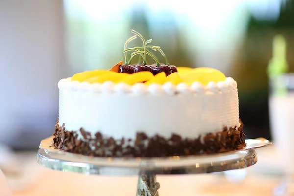

KIAKA CAMPANY LTD

KIAKA is a cooperative that was founded in 1976 with the aim to create
jobs for unemployed youth in former Kanama commune. KIAKA stands for the umbrella
of artisans in Kanama commune. Jean Pierre Godding, then a Belgian volunteer in Gisenyi prefecture,
was the main architect of the cooperative. From its inception, KIAKA had full support from local authorities
of thelocal government of Kanama. The cooperative is headquartered in Nyakiliba sector, Rubavu district in Western
Province, about 12kms from Gisenyi on the main road Rubavu-Musanze. In order to promote craftsmanship and support...